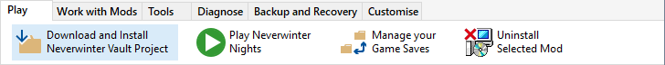

The Neverwinter Vault is an excellent source for Mods you can play and use to enhance many aspects of the game. These Mods are defined as Projects and each one has a page containing information about the Mod, the files required to use the Mod as well as any dependencies on Required Projects.
The Installer Tool provides full support for downloading and installing Mods directly from its Neverwinter Vault's Project page. See Download and install Mods from other sites for non-Neverwinter Vault files.
Each time you use Download Project to retrieve information about a Neverwinter Vault Project, Mod dependency information is automatically recorded.

You can use Download Project to download and install updated files for Mods that you have already installed.
Specify the Neverwinter Vault Project page
Review and customise download information
Download and install Neverwinter Vault Projects
Download and install Mods from other sites
Review Mod information in added files
Make Mod notes and record information
Add Mods from downloaded files